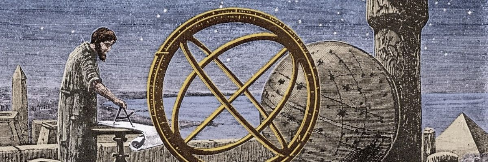

1. Introducción
En este artículo queremos presentar las distintas estabilizaciones
y desestabilizaciones culturales producidas entre las culturas
científicas mesopotámicas y egipcias, y su paso a la cultura
griega-helenística, en el campo de la astronomía. Esto nos ayudará
a concebir la innovación científica como un proceso de transmisión
de información y técnicas entre distintas sociedades; de esta forma
esperamos superar una visión reduccionista que únicamente se centra
en los descubrimientos atribuidos a los griegos, muchos de ellos
procedentes de otros pueblos. Algo que procuraremos en este trabajo
es conceder a la técnica el papel que verdaderamente ha tenido en la
historia de la ciencia, lugar que pocas veces ha sido reconocido en
su justa medida, debido a un prejuicio cultural creado en la Grecia
clásica, y difundido con gran éxito por Platón y Aristóteles, que
afirmaba que el saber teórico era superior, epistemológicamente hablando,
al técnico.
2. El nacimiento de la astronomía antigua
Al amparo del río Nilo, del Tigris y del
Éufrates, surgieron en la antigüedad dos de las civilizaciones más
importantes de la historia: la egipcia y la mesopotámica. En ellas
se desarrolló una artesanía que dio lugar a diversas invenciones
técnicas de primer orden: el telar, objetos de cristal, metal, etc.
. Todo esto acarreo un mayor desarrollo social y la consiguiente
especialización del trabajo. Se crean, además, diversas técnicas
simbólicas como la escritura, la matemática y la astronomía.
Estas nuevas técnicas son cultivadas por una clase de funcionarios
o sacerdotes que ocuparán una posición importante en la escala social,
ya que serán fundamentales para la administración de estos imperios.
La astronomía surge en estas sociedades por la necesidad de crear un
calendario y poder prever diversos fenómenos de gran importancia para
la agricultura. Además, en estas culturas las creencias astrológicas
eran de gran importancia, y por eso era necesario tener un registro
fiable de los diversos fenómenos celestes (eclipses, fases lunares, etc.)
que podían señalar acontecimientos futuros en la vida de los hombres,
especialmente en la de los reyes y sus familias. Gracias a esto los
egipcios y los mesopotámicos crearon una serie de calendarios y de
tablas donde medían ciclos astronómicos; esto presuponía un buen
dominio de la aritmética y una gran capacidad de observación de los
diferentes sucesos celestes; aunque este tipo de saber seguía
interpretándose desde un punto de vista mitológico .
Los griegos también estuvieron interesados en la astronomía;
esto lo demuestran las predicciones e inventos (predicción de eclipses,
construcción de un gnomon, etc.) atribuidos a los primeros filósofos
(Tales , Anaximandro, Pitágoras, etc.) dentro de este campo de
investigación. Estos astrónomos de Grecia innovaron sobre todo en la
interpretación simbólica, más que en la inventiva, porque muchas de las
innovaciones que se les atribuyen fueron adoptadas de Egipto y
Mesopotamia; gracias al testimonio del historiador Herodoto conocemos
estas transferencias culturales. Los griegos innovaron en su
interpretación de los fenómenos celestes, es decir, en la astronomía
teórica, basándose en las observaciones hechas por las culturas anteriores.
Pitágoras en primera instancia, y posteriormente Platón y Eudoxo, intentaron
buscar una armonía matemática en el cosmos donde pudiesen encajar todos los
fenómenos conocidos en su época. Pero este propósito chocaba, en muchos
casos, con las observaciones directas, teniendo que complicarse más el
sistema para darles una explicación. Dentro de esta línea encontramos a
Aristarco de Samos y, posteriormente, a Ptolomeo, autor del Almagesto.
Esta obra fue el compendio astronómico-matemático de referencia, junto
con el De caelo de Aristóteles (que proporciona el fundamento
simbólico-filosófico), en la astronomía hasta las investigaciones de
Giordano Bruno, entre otros. Por otro lado, en la época Helenística,
y después de la muerte de Alejandro Magno, Ptolomeo funda el Museo de
Alejandría, donde se concentrarán los sabios más importantes de ese periodo,
desplazándose el centro cultural de Atenas a Alejandría.
3. Los agentes y prácticas innovadoras y estabilizadoras
Gracias al testimonio de Herodoto sabemos que el primer pensador
griego que se interesó por la astronomía fue Tales de Mileto (6). Parece ser que visitó Egipto y
Mesopotamia, conociendo de primera mano la astronomía babilónica; de esta forma logró recopilar
una serie de conocimientos que le ayudaron a predecir eclipses (uno de ellos en el transcurso de
una batalla) y a realizar otros importantes descubrimientos. Tales aportó una cosmología en la
que todo surgía de una gran masa de agua. La Tierra reposaría sobre ese líquido y los cuerpos
celestes flotarían sobre un arco de agua situado encima del mundo; de ahí procedería la lluvia
que cae del cielo (7). Dicha visión del universo no es muy diferente de la que encontramos en
los mitos egipcios, pero ya supone un paso adelante en la elaboración de una cosmovisión libre
de elementos mitológicos y basada en realidades físicas.
Conocemos también el interés que Anaximandro tuvo por cuestiones astronómicas. Dicen que
construyó un gnomon, aunque este invento es una transferencia cultural de los babilonios. Según
este autor los cuerpos celestes (entre ellos la Tierra) nacieron de una esfera de fuego en
movimiento de la que se separaron. Nuestro mundo está suspendido sin ningún soporte, y el Sol y
la Luna giran a su alrededor gracias a unas ruedas de fuego con unos ejes que pasan por el
centro de la Tierra.
Pitágoras y su escuela mantuvieron que el universo poseía una armonía y belleza matemática.
Atribuyeron forma esférica a los cuerpos celestes porque el círculo era considerado la figura
más perfecta. Para ellos el cosmos es una esfera en cuyo centro hay un fuego originario; a
continuación vienen los cuerpos celestes: la Anti-tierra (añadida para completar el número 10 de
planetas), la Tierra, la Luna, el Sol, los cinco planetas conocidos y el cielo de las estrellas
fijas. Una esfera de fuego envuelve este conjunto. El movimiento de las esferas celestes produce
una maravillosa música, que no oímos por estar habituados a ella desde el nacimiento.
Dentro de esta línea continuó Platón, que intentó crear un sistema que hiciese encajar todos los
fenómenos celestes en su cosmovisión. Su obra astronómica por excelencia es el Timeo; sin
embargo, para este filósofo, sólo puede haber ciencia de las Ideas, por eso considera lo allí
relatado como una narración verosímil y no como algo científico (en contra de lo que pensará
Aristóteles, que sí cree que es posible una ciencia astronómica). Este tipo de pensamiento
comenzado por Pitágoras y Platón será continuado por Eudoxo, discípulo de este último; para ello
construyó un sistema de esferas que giraban en torno a la Tierra y que intentaban explicar todos
los fenómenos celestes. Su aportación más importante es esta geometrización de la astronomía,
dejando de lado las interpretaciones mitológicas de los egipcios y babilonios, y las físicas de
los primeros filósofos griegos.
Aristóteles, por su parte, divide el cosmos en un mundo sublunar sometido a la corrupción y a la
generación, y compuesto por los cuatro elementos; y un mundo supralunar (cuyo elemento
constituyente es el éter) donde los astros y el Primer Motor son divinos e incorruptibles. Esta
visión del universo expuesta en el De caelo y en el libro XII de la Metafísica constituirá el
paradigma astronómico durante toda la Edad Media.
Finalmente cabe destacar la aportación de Aristarco de Samos. Fue el primero en proponer que el
Sol era el centro del universo. Es famoso por su intento de determinar la distancia entre el Sol
y la Luna, y la Tierra y el Sol; advirtiendo así que el Sol se encuentra mucho más alejado de la
Tierra que de la Luna. Sustituyó también el reloj solar plano por uno cóncavo semiesférico.